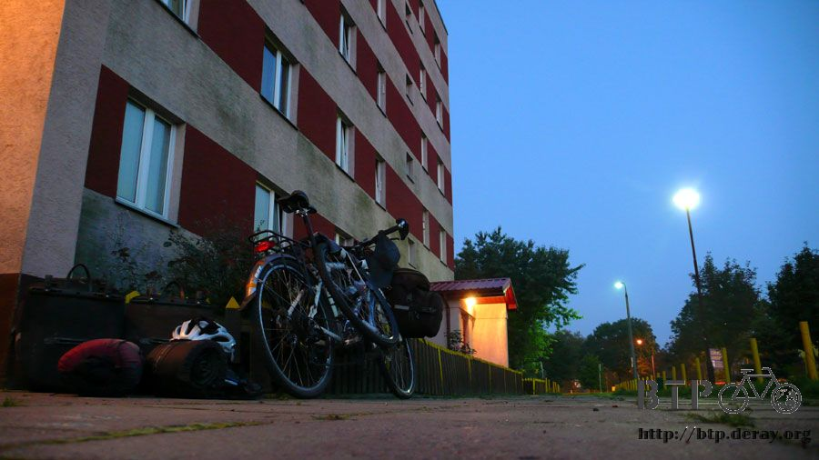

遍地明燈
After leaning against the uneven wall all night to sleep,
it felt there were pricks picking on me.
Around 2am, I got up and changed to sleep on the cold floor,
and used the sleeping bag as a pillow.
I slept to around 5am and then got up. This is because of time difference;
the alarm clock woke me up an hour early.
At the same moment, there was an early rising grandmother who walked out of the apartment.
The grandmother was shocked to see me sleeping on the floor.
Not only did she didn’t ask me to leave;
she asks me if I need to go inside and sleep on the stair steps.
Thank you but no need since it was almost light outside,
there is still huge distance I need to ride today. For where to sleep tonight, I will figure it out later.
Ripping off a page from the notebook I wrote some thankful words:
Last night I say need nothing,
Because your smile is everything
Thank you.
I stick it by the stair steps where I slept hoping the nice person will see it.
After being kicked away several times the whole night,
I felt the coldness from the people of Warsaw. But I still met people with a warm heart.

Barely light outside, stretch a bit before ready to leave.
There was no need to repack anything since I didn’t take out anything.
There were barely any cars on the road.
After sleeping on the streets a few times,
the least number of cars on the street is between 3-6am.
You can even roll around on the street, although it would better not to do that.
For the breakfast the last few days, I have been eating the cake I purchased from Belarus.
Really, each roll of cake lasts me a meal with the addition of water, soda, and juice.
I will drink whatever beverage I can get.
With the $66Zit I exchanged after getting into Poland,
there wasn’t a lot of money on me.
Thinking back, the store that exchanged my money is a bit of evil.
They only exchanged me $36USD for $66Zit.
Even with the worst exchange rate, I should be able to get $81Zit.
Since there weren’t a lot of cash on me, I will have to watch myself.
My goal is to make it to Poznana with 4 days of ride with just the money on me.
There are lots of ways to save money including going to the grocery stores more,
less restaurants and hotels.
Like this a huge bottle of soda plus another huge bottle
of orange juice and 2 loafs of bread just around $11.5Zit, it is a good deal.
The bread has already been sliced, and it is easy to eat.
The texture is totally different from the ones I have eaten before.

First thing is the crust, which is not like the dry and hardness of normal bread.
The Polish bread crust is chewy, similar to chewing gum, which requires a lot of chewing.
Then the inside, the white and soft texture is pretty good, but salty.
I am pretty sure they added lots of salt when making the bread dough to produce this flavor.
Even white bread is this salty, so Polish must prefer heavy taste.
While chewing my bread and drinking juice,
I found there is a water faucet outside of the store.
Before going to sleep last night I didn’t even clean myself at all,
not even changing clothing, this is probably the dirtiest I have been on the whole trip.
From the faucet’s flowing water I wiped myself all over trying to
get rid of the tiredness from yesterday, today is a new beginning.

In Poland, 90% of the people are Catholic so churches are seen everywhere.
Even in places there are no churches there are still beautiful carvings
and smaller sized church like burial plots.
There is one similarity among those burial plots;
they all have this oil gas lamp underneath.
There is no exact design to those lamps, but they are seen everywhere, even at bus stops.
In the dark nights when there is a lamp lighted in the field, it makes the night seem warmer.
I don’t feel good riding today.
But ever since arriving to Poland, I could feel the street condition gotten better,
this is the result of road resurfacing.
It would be difficult riding for 10km and not see any street resurfacing,
almost every road are being worked on.
Or is it my bad luck picking streets that are always under working condition?
When there is work going on at the left of the road, everyone will push to the right.
When there is work going on at the right of the road, everyone will push to the left.
Today is very special, the work is going on at the center of the road,
so everyone are pushing toward each side of the road, which is where I was riding at.
With the road so small I didn’t expect any car will go around me or let me go first,
this is because the road are so small.
When the truck passes, there are no spaces left at all.
With 10km or so of road under service, I have to park the bike on the
grass at the side to wait until there no heavy traffic going on before I can ride.
Then if the traffic gets heavy again,
I will have to park the bike on the grass again to wait the traffic out.
It is no use always waiting, so I figured out a way.
Since I can’t ride fast anyway, I ended up taking the bike to the center of the road,
and walk the bike there. This is faster than just waiting on the side.
All sorts of fruit trees that doesn’t have any fence surrounding them,
the most common is apples; each of the apple is huge and red.
There are also fruits like peaches, grapes, apricots; I can reach them with just my arm extended.
However, this is considered stealing, if I want to eat fruit I will wait until I see a fruit stand.
Around noon I found a restaurant that is not very popular because of road construction,
I decided I would rest here today.
The menu is covered in Polish,
the ones I can understand on the menu are fast food but I don’t want to eat them.
By luck I picked a $5Zit ($2USD) meal,
what they delivered was a bowl of hot soup with sliced sausages and a huge piece of bread.
Half of the bowl is covered with delicious sausages;
tastes so good I almost swallowed my tongue with it.
However just like the bread, the soup is ridiculously salty.
Before I would always put lots of salt and pepper on my food before starting to eat,
but I don’t need to do that in Poland.
Now I just take my water bottle and ask them for water.
Staying in the restaurant during the hottest time of the day until about
3pm in the afternoon before I left.
Of course during this whole time I was writing the travel journal.
I also washed my dirty clothing and dried them under the hot sun outside.
I can ride faster, or eat faster, but I can never write travel journal fast.
If I can finish an entry in about 2 hours I will clap with happiness,
however normally it takes about 4 hours or so for each entry.
The red brick church that I had passed on the street.
Even though it looks hot outside, but it was actually pretty cool,
the temperature didn’t go past 30C (86F) when I ride.
This is not an empty country at all, comparing to China, Kazakhstan,
Russia, and Belarus, this country seems very impacted.
Of course there are fields as well, but it is impossible to pass more than 10km or 100km
where there is no homes, stores, gas stations, and hotels are everywhere.

When I felt it is deserted here, immediately I see a McDonald 2km (1.24mile) up ahead.
If there were enough money, then it would be hard to be hungry or sleep on the streets in Poland.
Of course McDonald is not my stopping point, I continuously riding toward Poznana.
I got really lost in Warsaw yesterday, so I didn’t ride as much.
When I got up this morning, there was still 300km (186mile) from Poznana.
So today I must ride at least 150km, and leave the other 150km for tomorrow.
If I want to arrive at Poznana early, then I must try harder today.
Walking into this store for the last shopping trip today.
Looking at the prices in the store, after evaluating I picked a bottle of lemon soda.
In this store other than bottled water, this is the cheapest beverage.
It is difficult to take such a large bottle with me,
so I sat in the shade of the store and drinking the not cold soda.
I also put water in my water bottle so I can use it tonight to
brush my teeth along with wiping myself clean.
Right then there is a guy wearing red and white-checkered shirt seeing
me drinking my soda asked me if I was hungry.
And then he asked the cook inside to make a bowl of tomato soup with noodles.
Even though this is simple food, but I feel warm inside eating warm food.
The sour tomato soup is very tasty, at least not as salty as the sausage soup I had for lunch.
I took out the bread I had purchased to eat with the tomato soup.
That is what I had for dinner, thanks to the nice man.
Right when I was getting ready to leave, the cook gives me a bottle of water.
When I arrived here I had empty water bottle and hungry stomach,
but when I left I was completely filled and the water bottles are also filled with water.
In addition I also have a bottle of water as a gift and half bottle of lemon soda.
After thanking them I continue to ride toward the west, I haven’t reached 150km today,
lets go!
Even though the sun hasn’t gone down yet but it has already been covered with dark clouds,
so the whole sky looks like it has been bombed. I bet it will rain tonight, 90% sure it will.
Looking at the sky, I know it will get darker earlier tonight,
so I will need to find a place with roof covering to sleep, or in a hotel?
Don’t be joking, I will reach Poznana tomorrow, why would I stay in a hotel.
Besides I don’t have the money either,
let’s keep riding and see if there is any place I can sleep tonight.
Good bye, sun, I will go to bed later than you tonight.
Tomorrow morning I will sleep longer, and not get up earlier than you do.
Before it got dark I found this strange empty building.
The exterior is completely perfect, the windows are not broken either.
I feel there is no one living there, let’s check it out first.
Going around the house there is a little path leaving to the building, the path is very private,
there are grasses everywhere and peach tree above my head,
even the entrance is almost covered up. It doesn’t look like anyone comes here.
I discovered it was definitely an empty house after entering,
this is probably a warehouse or storage, and there are piles of wood and stalks.
However, there is a flat rectangular shaped area inside, this is the bed intended for me.
After checking out the whole place making sure this is a campsite, I brought in the bike.
Taking off the luggage then put the bed on the soft stalks,
so I won’t get sore from sleeping on the ground.
When I was cleaning myself up, it started raining outside.
After an hour, it rained harder, the rain came down heavier and heavier, I felt luck.
Luckily I found a place to sleep, what if I am still on the road?
Looking out of the window from inside the building, the entrance is covered with plants.
This feels like one of those cabins on a deserted island.
I slept well; I barely slept at all last night, and the night before I couldn’t sleep.
So today once I lay down I slept soundly, and the rain got heavier during the night.
The rain pouring down, it felt like ocean waves smacking down with the addition of the thunder.
Both nights are like thunderstorms.
It is a good thing the rain happened in the nighttime,
and it would be good to ride the bike during the day.
Rain however much during the night, but please stop raining during the day,
give me back blue sky during the day.